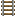

Getting around
Railways
Ten lines leave from the central station in Groveheart City. Hop in a minecart and you are anywhere in no time.
Ten lines leave from the central station in Groveheart City. Hop in a minecart and you are anywhere in no time.
All lines leave from the station in Groveheart City. It is also the best meeting point for new players.
-5914 67 5578
These lines serve lots of stations. Set where you want to go with the /dest command before you ride.

Groveheart's own internal network, linking the towns and settlements of the kingdom.
-5920 67 5578A vast network connecting every Imperial Federation settlement and their allies.
-5914 67 5578An international line from Brunsvick across the eastern side of the map.
-5908 67 5578No /dest needed: these lines take you directly to one station. Their platforms are one level down.
| Destination | Platform | |
|---|---|---|
| Brunsvick, Salerno | -5906 59 5550 | |
| Woolhaven | -5906 59 5556 | |
| Pavia | -5910 59 5546 | |
| Estalia | -5918 59 5546 | |
| Gothia | -5922 59 5550 | |
| Grovehell | -5921 59 5556 | |
| Saoirse | -5922 59 5562 |
King Gidein is working on a mod that will make finding your way on the rails much easier. We will link it here once it is ready. Until then, #railway-info on our Discord has the latest news.